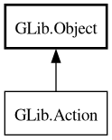

Action
Object Hierarchy:

Description:
[
CCode ( type_cname =
"GActionInterface" , type_id =
"g_action_get_type ()" ) ]
public interface Action :
Object
All known implementing classes:
Content:
Properties:
Static methods:
Methods:
Inherited Members:
All known members inherited from class GLib.Object